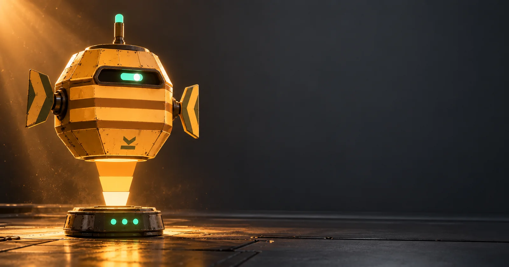

FERRIN
A salvage-refit shipboard intelligence for your Codex and ChatGPT desktop. Standing watch over your work, one manifest at a time.

- Preview consoleThe desktop pet with Drift Ops: commands, mini-games, hidden logs and Ballast Tags.
- 3D studyWatch FERRIN materialize, then take it apart: capabilities, blueprint, emitter physics, specs.
- Talk to FERRINPush-to-talk voice prototype, entirely in the browser.
- Sound packThirty synthesized cues and a simulated work session.
Install the pet from dist/ferrin.zip. Forked from ruvnet's MIT-licensed pet package; see the README for credits. Not an official OpenAI product.